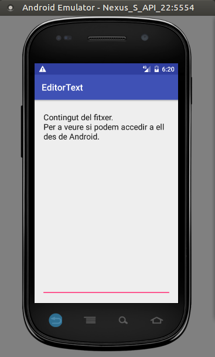

2 - Permanència en fitxers
En el cas dels fitxers, el comportament en Android és similar que en Java. Per tant ho tenim fàcil.
Insistirem en algun detall i mencionarem alguna utilitat.
Per a practicar, ho farem sobre el següent exemple, en el qual senzillament col·locarem en un EditText el contingut d'un fitxer de text. Encara que només anem a mostrar el contingut del fitxer, ho fem sobre un EditText i no un TextView per a poder després reutilitzar-lo en un exemple un poc més complex.
Aquest exemple el desenvoluparem tant amb el llenguatge Java com en Kotlin. No cal que ho feu en els dos. Podeu triar només un. Però anem a fer l'exemple compatible per si voleu fer-lo en els dos.
- JAVA: Crearem un projecte nou, anomenat EditorTextJava. Per a poder copiar sense problemes els programes posteriors, posarem el domini example.com , però cuideu que el paquet es diga com.example.editortext (no com.example.editortextjava, com us suggerirà en principi). Si no heu canviat el nom del paquet, cuideu que quan feu referència al fitxer, tingueu la ruta considerant el vostre nom de paquet.
- KOTLIN: Crearem un projecte nou, anomenat EditorTextKotlin. Per a poder copiar sense problemes els programes posteriors, posarem el domini example.com , però cuideu que el paquet es diga com.example.editortext (no com.example.editortextkotlin, com us suggerirà en principi). Si no heu canviat el nom del paquet, cuideu que quan feu referència al fitxer, tingueu la ruta considerant el vostre nom de paquet.
En l'activity_main.xml, només posem el EditText, que ocuparà tota la pantalla, i el text no estarà centrat, sinó cap amunt. Serà idèntic tant per la varsió en Java com en la de Kotlin.
<?xml version="1.0" encoding="utf-8"?>
<androidx.constraintlayout.widget.ConstraintLayout xmlns:android="http://schemas.android.com/apk/res/android"
xmlns:app="http://schemas.android.com/apk/res-auto"
xmlns:tools="http://schemas.android.com/tools"
android:layout_width="match_parent"
android:layout_height="match_parent"
tools:context=".MainActivity">
<EditText
android:text=""
android:id="@+id/text"
android:layout_width="match_parent"
android:layout_height="match_parent"
android:inputType="textMultiLine"
android:gravity="top" />
</androidx.constraintlayout.widget.ConstraintLayout>
El programa principal, de moment no té res, així que el seu esquelet és el següent. Observeu que en Java hem incorporat el EditText per a poder fer referència a ell. En kotlin no fa falta
| JAVA | KOTLIN |
|
|
On únicament fem referència a l'EditText per a poder utilitzar-lo posteriorment.
Podeu executar-lo per veure el seu aspecte.
Classes de Java
Podem utilitzar qualsevol de les classes de flux de dades per a accedir al fitxer, però en aquelles en les quals posem el nom del fitxer, és molt convenient posar tota la ruta, i evidentment que es tinguen permisos en el directori. Una bona idea, si no s'han de compartir, és posar el fitxer en la zona reservada per a l'aplicació que està en:
/data/data/paquet_de_la_aplicació
I dins d'aquesta ruta és una costum utilitzar un altre directori per als fitxers anomenat files.
Així per exemple, si la nostra aplicació s'ha creat en un paquet anomenat com.example.editortext i volem accedir al fitxer notes.txt, la ruta recomanada del fitxer seria:
/data/data/com.example.editortext/files/notes.txt
És a dir, que si per exemple volem accedir a un fitxer de text (per tant ens convé Reader), i després volem decorar-lo amb BufferedReader per legir línia a línia, posaríem:
BufferedReader f = new BufferedReader(new FileReader("/data/data/com.example.editortext/files/notes.txt"));
I si el que volem és escriure en ell (FileWriter), però afegint al final i línia a línia (PrintWriter):
PrintWriter f = new PrintWriter(new FileWriter("/data/data/com.example.editortext/files/notes.txt",true));
Si en canvi volem accedir a un fitxer binari (InputStream), i llegir diferents tipus de dades (DataInputStream):
DataInputStream f = new DataInputStream(new FileInputStream("/data/data/com.example.editortext/files/fitxer.dat"));
I per a escriure en ell diferents tipus de dades:
DataOutputStream f = new DataOututStream(new FileOutputStream("/data/data/com.example.editortext/files/fitxer.dat"));
Nota
Per a més comoditat hem utilitzat en aquestos apunts una versió anterior d'Android, concretament la 5.1 (API 22). A partir de la API 23 és necessari donar expressament el permís d'accedir en el AndroidManifest.xml
<uses-permission android:name="android.permission.READ_EXTERNAL_STORAGE" />
En l'exemple inicial, per poder veure que accedim a un fitxer, podríem col·locar-lo a mà prèviament d'aquesta manera:
- Editem el fitxer notes.txt des de qualsevol editor de textos (per exemple Gedit o Notepad) posant el contingut que vulgueu.
- Posteriorment des de Android Studio anem a View -> Tool Windows -> Device File Explorer. Ha d'estar el simulador en marxa.
- A la dreta ens apareixerà una finestra per explorar pel dispositiu. Ens situem en /data/data/com.example.editortext (o el nom del paquet que hem posat).
- Si ja havíem executat el projecte, existirà el directori anterior, i el seu contingut serà únicament els subdirectoris cache i code_cache, segurament. Potser existesca el directori files, o potser no.
- Si no existeix el directori files, el creem dins de /data/data/com.example.editortext , amb el botó de la dreta New --> Directory , situats en el directori anterior.
- Estant situats en files, pugem el fitxer notes.txt amb el botó de la dreta i opció Upload.
Nota
En versions anteriors de Adroid Studio es feia des de Tools -> Andoid -> Andoid Device Monitor.
Ara modifiquem el programeta inicial, fent que carregue el contingut del fitxer al EditText.
JAVA
package com.example.editortext;
import androidx.appcompat.app.AppCompatActivity;
import android.os.Bundle;
import android.widget.EditText;
import java.io.BufferedReader;
import java.io.FileReader;
import java.io.IOException;
public class MainActivity extends AppCompatActivity {
@Override
protected void onCreate(Bundle savedInstanceState) {
super.onCreate(savedInstanceState);
setContentView(R.layout.activity_main);
final EditText text = (EditText) findViewById(R.id.text);
try {
BufferedReader f = new BufferedReader(new FileReader("/data/data/com.example.editortext/files/notes.txt"));
String cont = "";
String linia = f.readLine();
while (linia!=null) {
cont += linia + "\n";
linia=f.readLine();
}
text.setText(cont);
f.close();
} catch (IOException e) {
e.printStackTrace();
}
}
}KOTLIN
package com.example.editortext
import androidx.appcompat.app.AppCompatActivity
import android.os.Bundle
import kotlinx.android.synthetic.main.activity_main.*
import java.io.BufferedReader
import java.io.FileReader
class MainActivity : AppCompatActivity() {
override fun onCreate(savedInstanceState: Bundle?) {
super.onCreate(savedInstanceState)
setContentView(R.layout.activity_main)
val f = BufferedReader(FileReader("/data/data/com.example.editortext/files/notes.txt"))
var cont = ""
var linia = f.readLine()
while (linia != null) {
cont += linia + "\n"
linia = f.readLine()
}
text.setText(cont)
f.close()
}
}Aquest podria ser el resultat:

El següent vídeo mostra tot el procés, incloent la pujada del fitxer notes.txt al dispositiu.
Mètodes propis: openFileInput() i openFileOutput()
Android ens proporciona uns mètodes que ens poden fer un poc més còmode l'accés al fitxer. Sobretot ho mencionem perquè la seua utilització està molt estesa.
Es tracta de openFileIntput i openFileOutput, ambdós estan en android.content.ContextWrapper. La seua sintaxi és:
public FileInputStream openFileInput (String nom)
public FileOutputStream openFileOutput (String nom, int mode)
Com veieu, en el primer cas accepta en un string el nom d'un fitxer i torna un FileInputStream. Amb aquest InputStream ja podem fer el que ens convinga: decorar-lo amb un ObjectInputStream o DataInputStream, o convertir-lo a Reader amb InputStreamReader.
En el segon cas torna un FileOutputStream i accepta un segon paràmetre, a banda del nom del fitxer també posarem el mode d'obertura. Els diferents modes són:
- MODE_PRIVATE (0): és el mode per defecte, i si ja existeix el fitxer, matxacarà el seu contingut
- MODE_APPEND: si ja existeix, no matxacarà el contingut, sinó que introduirà després.
- MODE_WORLD_READABLE i MODE_WORLD_WRITABLE serveixen per a controlar els permisos. En principi no els utilitzarem.
Es pot comprovar que senzillament és un pas previ abans de tenir el InputStream o OutputStream. Per defecte, si no posem la ruta del fitxer, aquest estarà en l'entorn del paquet de l'aplicació més concretament en el directori files:
/data/data/paquet_de_la_aplicació/files
Com ja és per defecte, si el volem ahí (que serà el més habitual), només haurem de posar el nom del fitxer. En el mateix exemple anterior, en què volíem al final un BufferedReader, haurem de convertir el InputStream que ens dóna openFileInput en un Reader, amb InputStreamReader:
BufferedReader f = new BufferedReader(new InputStreamReader(openFileInput("fitxer.txt")));
I per a escriure, també com en l'exemple anterior:
PrintWriter f = new PrintWriter(new OutputStreamWriter(openFileOutput("fitxer.txt",MODE_APPEND)));
I els exemples d'accés a fitxers binaris, en cas de lectura:
DataInputStream f = new DataInputStream(openFileInput("fitxer.dat"));
i en cas d'escriptura (en aquest cas matxacant el possible contingut anterior):
DataOutputStream f = new DataOutputStream(openFileOutput("fitxer.dat",MODE_PRIVATE));
En el cas de l'exemple que estem utilitzant, podríem haver substituït la línia:
BufferedReader f = new BufferedReader(new FileReader("/data/data/com.example.editortext/files/notes.txt"));
Per aquesta altra:
BufferedReader f = new BufferedReader(new InputStreamReader(openFileInput("notes.txt")));
KOTLIN
En el cas de Kotlin les coses queden molt més senzilles i còmodes. Encara que utilitzem les mateixes classes que en Java, aquestes tindran uns iteradors que faran les coses molt senzilles. També té mètodes per a poder llegir el fitxer sencer
Alguns mètodes de File:
- appendBytes: afegeix un array de bytes al final del fitxer
- appendText: afegeix un string al final del fitxer, podent especificar fins i tot la codificació
- inputStream, bufferedReader, bufferedWriter, ...: torna directament la classe especificada (sense haver de passar per un FileReader en el cas de BufferedReader)
- copyTo: copia el fitxer en un altre
- copyRecursively: copia el File i tots els seus possibles descendents
- forEachLine: agafa cada línia del fitxer
- readBytes: llig de cop tot el fitxer i ho guarda en un array de bytes
- readLines: llig totes les línies del fitxer i les guarda en un List
- readText: llig de cop tot el fitxer i ho guarda en un string
- writeBytes: escriu tot l'array de bytes
- writeText: escriu el string, fins i tot especificant la codificació
Alguns dels mètodes són d'extremada utilitat, fent que la lectura i tractament del fitxer ens ocupe una única línia.
Així per exemple, en l'exemple anterior, podem substituir les següents sentències:
val f = BufferedReader(FileReader("/data/data/com.example.editortext/files/notes.txt"))
var cont = ""
var linia = f.readLine()
while (linia != null) {
cont += linia + "\n"
linia = f.readLine()
}
text.setText(cont)
f.close()
Per aquestes:
var cont = ""
File("/data/data/com.example.editortext/files/notes.txt").forEachLine(){ cont += it+"\n"}
text.setText(cont)
on hem agafat línia a línia, i per cadascuna traem el seu contingut més la baixada de línia.
I encara més curt i còmode si llegim de cop tot el fitxer:
text.setText(File("/data/data/com.example.editortext/files/notes.txt").readText())
De manera que el programa quedaria així. Com veieu molt més còmode:
package com.example.editortext
import androidx.appcompat.app.AppCompatActivity
import android.os.Bundle
import kotlinx.android.synthetic.main.activity_main.*
import java.io.File
class MainActivity : AppCompatActivity() {
override fun onCreate(savedInstanceState: Bundle?) {
super.onCreate(savedInstanceState)
setContentView(R.layout.activity_main)
text.setText(File("/data/data/com.example.editortext/files/notes.txt").readText())
}
}
Llicenciat sota la Llicència Creative Commons Reconeixement NoComercial CompartirIgual 2.5